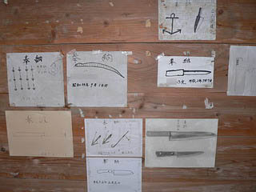
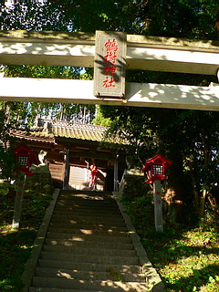

三陸失せ物絵馬巡り/宮城県石巻市〜岩手県大船渡市
のっけから泣き言で恐縮だが、今回はホント辛かったよ。
行けども行けども目的地に辿り着けない曲がりくねったリアス式海岸沿いのドライブ。
おまけに前日の暴風雨の影響であちこちが通行止め。
行程が予定通りに行かない事以上に暴風雨の為、断水や冠水といった非常事態でてんやわんやの港町にのほほ〜んと物見遊山に訪れた後ろめたさ、罪悪感でテンションは何時になく下降気味、というか少なくとも地元の方に迷惑だけはかけないように行動しよう、というプレッシャーからあまりお話も聞けず心身共に辛い行程と相成った。
洒落にならない時に呑気にお邪魔してスミマセンでした…
というわけで、今回のお題は失せ物絵馬。きっかけは川島秀一氏の執筆された論文だった。
そもそも失せ物絵馬とは何か。
簡単に言えば漁師さんが漁の際に金物を海に落とした場合、海のカミサマに詫びるため神社などに奉納する紙の絵馬なのだが、これが実に面白い。
多くは半紙や画用紙に実際に落としたモノの絵が描かれているのだ。
奉納者が自分で描くので味わいは満点である。
実にシンプルな奉納形態だがそれだけに奉納者の本気具合が伝わってくる逸品である。
三陸の海沿いという地域限定奉納グッズなので数は少ないのか、と思っていたが川島氏の論文によればあるわあるわ。
その数は半端じゃなかったのだ。
もちろん全部見たいのはやまやまだが、とても1日2日で全部見られる数ではないので、事前に面白そうだと思った絵馬だけをピンポイントで訪問する事にした（しかしその予定していたベストセレクションですら時間がなくて半分も回れなかったのだが）。
一見どこにでもありそうな神社、しかしそこには海の男達の海よりも深〜い信心が見てとれる。
五十鈴神社/宮城県石巻市
最初に訪れたのは牡鹿半島の給分浜にある五十鈴神社。
この日は石巻市内数箇所が冠水しており（石ノ森萬画館の周りとか凄いことになってました）ここに到着した時点でかなり時間が経っていた。
しかもその小さな港町は暴風雨の影響で断水。給水車があちこちに配備されている緊急事態だった。
申し訳なさ一杯での失せ物絵馬ファーストコンタクトとなった。
石段を登ると小さな社殿が建っており、その中にたくさんの紙が。
これが失せ物絵馬である。
錨の絵が多く見られるが、その他にも金槌、釣竿、フック、小刀、包丁などの絵も。
これらの金物を海に落とす事は漁師の間ではタブーとされていた。
光りものを海に落とすと魚が逃げる、というのがその理由のようだ。
光りものをバンバン投げ込むルアーフィッシャーの方々からは考えられないような話だが、この禁忌自体は全国的にみられるという。
意外だったのは平成のものが結構あった事。
この奉納習俗は現在進行形のものなのだ。
八鳴神社/宮城県石巻市
同じく牡鹿半島の新山浜にある八鳴神社。
海を臨む高台にある。
新山浜では港から車道に引き上げた漁船を再び引き戻す作業に町中が騒然となっていた。
ホンッとにこんな時に来てごめんなさい。
でも失せ物絵馬は見せてもらいます。
真っ赤な拝殿に入るとそこには数多くの貼り紙、もちろん失せ物絵馬である。
奉納者は個人名だったり○○丸といった船名で記載されていたり様々。
何故、失せ物絵馬は木の板ではなく紙に描かれているのか？
これは元々海に流していたものだったからだ、と川島氏は述べておられる。
何となく湯殿山の岩供養や流し雛を連想させる行為だがその関連性は今のところないようだ。
神社の傍らには八大龍王の石碑が。
海のカミサマの正体はこの八大竜王、いわゆる竜神様なのだ。
月山神社/岩手県陸前高田市
ところかわって陸前高田市。
石巻から随分ワープしたんじゃないの？との声も聞こえてきそうだが、その間あちこちの神社を訪ねたのだが失せ物絵馬がなかったり、神社自体が見つからなかったり道路が閉鎖されてたり、でも気仙沼あたりで旨い魚も食べたいし…色々大変だったんです。
海沿いの道から高台に階段がのびている。月山神社である。
石段には昨日の暴風雨で落ちてきた木の枝や葉っぱがあり、その威力をまざまざと見せつけていた。
中に入ると早速失せ物絵馬をチェック。
神主さんに話を伺うと以前に比べ減少傾向だとか。それでも何枚かの絵馬が貼られていた。
バケツもまあ、金物ですね〜。
出刃包丁流失というタイトルが付けられた絵馬。
日付に加えて緯度経度まで書かれている。これならカミサマも誰の落とした包丁か判りますね。
アナタの落とした包丁は金の包丁か？銀の包丁か？なんて事になったりして。
金刀比羅神社/岩手県陸前高田市
これまた陸前高田の金刀比羅神社。
こちらにも数点の絵馬が貼られている。

何といっても注目なのはこのやけにリアルな包丁絵。
普通マジック描きで陰影などないのだが、絵心のある人が描いた絵馬というのも迫力があるものだ。
打って変わってポンチな蛇。
これは蛇を船から落としちゃった…訳ではなく、竜神の化身としての蛇を描いたものと思われる。多分。
いや、もしかしたら本当に蛇を落としちゃったのかもしれないので断言は出来ないが…
仕掛け、分銅、銛など様々な金属品が並ぶ中、タイヤの落し物を発見。
金属ではないにせよ海のカミサマは喜ばないだろうなあ。
このように複数の失せ物をまとめて描いて奉納するのは遠洋漁業などあまり頻繁に奉納できない船のものではなかろうか。
鶴樹神社/岩手県陸前高田市
鶴樹神社。
こちらにもいくつかの失せ物絵馬があると聞いてやってきた。

中を見てみるがそれらしきモノが見当たらない。
もしかしたらこの神社（というか地域）では失せモノ絵馬奉納の習俗は絶えてしまったのだろうか。
それとも他の神社に奉納するようになってしまったのだろうか。

それでも布や宝剣や鉄の草鞋などが奉納されており、東北の民間信仰の濃さを物語っている。
ところで今回のようなかなりマイナーな神社や寺を巡る際には、スリッパを持っていった方が良いかも。
というのも普段あまり人が来ないようなところなので埃や鼠の糞などが床にびっしり、なんてこともある。
ここの場合は前日の暴風雨のため扉の隙間から葉っぱや小枝が吹き込み、しかも床がぐっしょりと濡れていた。
薬師如来/岩手県大船渡市
さて、三陸失せ物絵馬巡りも最終目的地の大船渡市に着いた。
ああ〜長かった。
奉納された金属製の宝剣。
何故か薬師神社とある。ここは薬師如来を祭った神社、と言うことでいいのだろうか？
鳥居のあるお寺をいくつも見てきたゆえ「鳥居があるから神社じゃん」という法則はあまり東北では通用しないのだ。
足元にはオシラサマが箱に詰められていた。
オシラサマといえば遠野、と思われる方も多かろうが、実は三陸沿岸の大船渡や陸前高田にも数多くのオシラサマの存在が確認されている。むしろ遠野よりも数は多く、隠れたオシラサマのメッカだったのだ。
このオシラサマは恐らく祀る人がいなくなったのでここに持ってきたのだろう。
戦死者の遺影も掲げられていた。合掌。
さて、失せ物絵馬である。
ここも例によって金属類の漁具を中心に様々な絵馬が奉納されている。
ここで珍しかったのは蛇と猫のイラスト。
先の金刀比羅神社でも見かけたが蛇は龍神様の使いだから何となく理解の範疇だが…猫って？
消え入りそうな細い線で描かれた猫と蛇。年配の方が描かれた絵なのだろうか。
奉納者のデータが一切記されておらず謎の残る奉納物であった。
そして今回最も見たかった失せ者絵馬はコレ。
←（クリックするとホンモノが見られます）
ぬあんとボートの船外機を海に落としちゃったみたいなのだ。
こうして絵馬を奉納しているので大事には至らなかったのだろうが、船の命、動力を海に落とすとはあまりにも豪快すぎるうっかりミスである。無事に帰ってこられたのだろうか。
トーハツ9.9というワードでメーカーのサイトにアクセスしてみるとあらあらホンモノそっくり。
恐らくカタログか何かを白黒コピーして奉納したのだろう。
それとも手描きで描いたのだろうか…
いずれにせよ古い習俗と現代のテクノロジーが何の違和感もなく同居しているところに民間信仰の懐の深さを実感せざるを得なかった。
薬師堂（神社？）は海から少し内陸に入ったところ。
田んぼにあったカカシが怖かったです…
これにて三陸失せ物絵馬巡りはタイムアップ。
最初は荒々しいイメージの海の男達が神妙な面持ちで包丁の絵を描いているイメージがあって可笑しかったのだが、その真剣具合を目の当たりにしていると、海の男の漁場に向かう真摯な姿勢を感じた。
今も昔も信心深い、というかそうならざるをざるを得ない程、振れ幅の大きい漁業という職業の厳しさを照射しているように見えた。
最後にこの暴風雨のため三陸沖で亡くなったサンマ漁船の乗組員に哀悼の意を表します。
参考文献
・三陸沿岸の「失せ物絵馬」（民具マンスリー、1997年）
・「漁撈伝承」 第二章「失せ物と竜神」（ものと人間の文化史109、2003年）
いずれも川島秀一氏著
今回の失せ物絵馬巡りの最良のガイドとして大いに参考にさせていただきました。
2006.10.